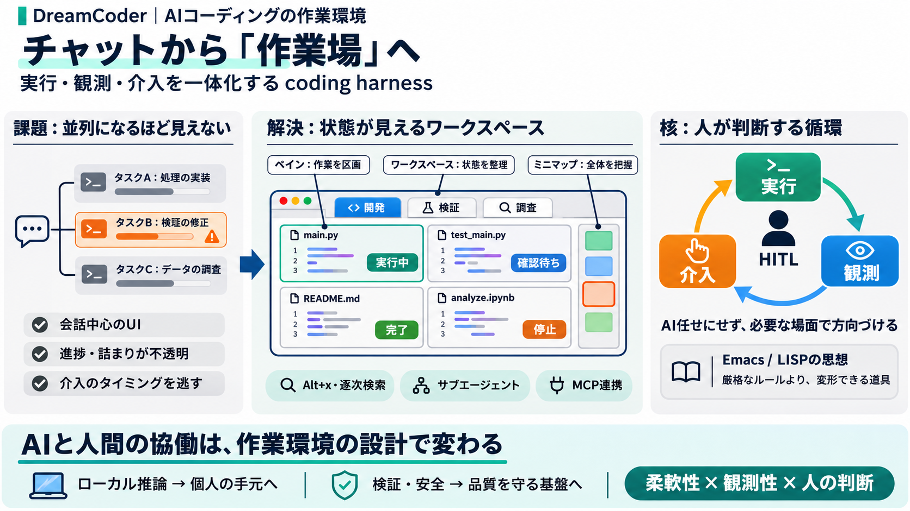

[PDF] DreamCoder: Building interpretable hierarchical knowledge ...
Concretely, DreamCoder operates by growing out declarative knowledge in the form of a symbolic language for representing…

チャットの先へ：実行・観測・介入を一体化するコーディングハーネス（coding harness）を、Emacs/LISPの思想と結びつけて説明します。
複数エージェントを“同時に走らせる”ほど、詰まりどころ（ブロック）や状態が見えにくくなり、人間の介入タイミングを失います。
「世界を厳格なルールで完全に表す」より、状況に応じて形を変えられる“道具の柔軟性（ductility）”が開発で生き残る、という見立てです。
DreamCoderは、AIが自動で完結する前提ではなく、人間が評価し決める（HITL: Human-in-the-Loop）運用を中心に据えます。
完全互換は難しい前提で、ブラウザでも“高速操作”の感覚を優先し、Alt+x（M-x相当）や検索-as-you-type を採用する方針です。
複数作業は散らばりがちですが、ペイン（作業区画）とワークスペース（仮想デスクトップ）で“まとまり”を作り、介入の見落としを減らします。
実行状態をミニマップやペイン状態表示で可視化し、並列実行でも“詰まり”へ素早く戻れる設計です。
ブラウザUIだけでなく、背景化されたサブエージェントやMCPサーバ等の“ハーネス機能”を組み込み、並列実行を運用可能にします。
DreamCoderは、チャットの単調さ・端末の使いにくさ・並列の観測不足を“体験設計”として扱い、開発者の作業感に寄せます。
小型モデルでのローカル運用が現実になり、推論コストが下がると“メーターされすぎない”知性に近づく可能性を示唆します。
ペンテスト／サイバーセキュリティ・スイートのような方向へ拡張し、成果物ではなく品質を守る基盤（ガードレール）にする構想が語られています。
DreamCoderの主張は「AIを使う」より先に、「AIと人間の協働を成立させる作業環境を再設計する」こと。ルールより柔軟性（ductility）、チャットより観測性、そして検証までをハーネスに内蔵します。
Concretely, DreamCoder operates by growing out declarative knowledge in the form of a symbolic language for representing…
learning algorithm alternately extends the language with new symbolic abstractions and trains the neural network on imag…
A \`\`wake-sleep'' learning algorithm alternately extends the language with new symbolic abstractions and trains the neu…
"AI coding tools have dramatically increased development velocity, but the rest of the delivery pipeline hasn't kept up,…
# Mickey Petersen [...] ## Skills cloud applications, integration, exact, writing, vagrant, shell scripting, bdd, procur…